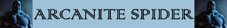

Veleno dell'Arcanite;
Assorbimento Minimo del Danno;
Passa Ragnatela;

|
|
Ambiente/Habitat | Templi di Kalian / Sotterranei |
| Frequenza | Comune / Molto Rara | |
| Organizzazione | Solitario o Piccolo Gruppo | |
| Periodo di Attività | Qualsiasi | |
| Dieta | Nessuna | |
| Intelligenza | Non Intelligent (0) | |
| Punti Combattimento | Nessuno | |
| Tesoro | Nessuno | |
| Allineamento Dominante | Neutrale | |
| Numero di Apparizione | 1d12: (1-6) 1 (5-11) 2 (12-15) 3 (16-18) 4 (19-20) 5 | |
| Classe Armatura | 2 [10 base, 7 corazza, 1 destrezza] | |
| Movimento | 8 esagoni | |
| Dadi Vita | 7 | |
| Thac0 | Thac0 14 | |
| Numero di Attacchi | Zampa / Zampa / Morso | |
| Danni | 1d10 (punta) / 1d10 (punta) / 2d4 (taglio) | |
| Poteri Offensivi |
Stretta per Divorare; Veleno dell'Arcanite; |
|
| Poteri Difensivi |
[7] Punti Ferita per Dado
Vita; Assorbimento Minimo del Danno; |
|
| Poteri Generici |
Poteri dei
Costruiti; Passa Ragnatela; |
|
| Vulnerabilità | Nessuna; | |
| Resistenza alla Magia | 25% | |
| Sensi | Vista Comune, Senso Primordiale 30 m. | |
| Dimensioni | Large (3 m. di diametro) | |
| Morale | Fearless (20) | |
| Valore in Punti Esperienza | 1795 |
|
TIRI SALVEZZA DELLA CREATURA |
|||||||
| CORAGGIO | ENERGIA VITALE | MAGIA | MALATTIA | MENTE | RIFLESSI | ROBUSTEZZA | VELENO |
| Immune | 0 | +5% | Immune | Immune | 0 | 0 | Immune |
| 42 | 47 | 52 | 41 | 55 | 49 | 44 | 38 |
Descrizione
Un enorme sagoma nera dalla forma simile a quella di un enorme ragno si avvicina. Quando è abbastanza vicino ci si può rendere conto che questo enorme aracnide non è un essere naturale ma una creatura artefatta. Il corpo infatti diviso in due parti è visibilmente ricoperto da metallo. La creatura è in realtà un enorme costruito di arcanite dal tipico colore viola scuro.Come tutti i ragni ha otto zampe che utilizza per muoversi e, ognuna delle quali è formata da alcuni segmenti in arcanite collegati tra loro da piccole gemme di ossidiana che ne garantiscono la mobilità. Tutti questi segmenti sono ricoperti da piccole lame. La testa anche essa in arcanite si contraddistingue per due grandi gemme di ametista che fungono da occhi. Le mandibole sono formate da due affilate chele dentatellate.
Combat
Questo ragno attacca le proprie vittime lanciandosi in corpo a corpo senza alcun timore di essere distrutto.
STRETTA PER DIVORARE (Lesser Special Ability): Questa creatura è in grado di utilizzare i propri artigli per stringere l'avversario e morderlo con ferocia. Qualora, infatti, questa creatura colpisce con entrambi gli artigli lo stesso avversario, lo terrà stretto e potrà morderlo con incredibile accuratezza. In particolare, l'attacco simultaneo di morso eventualmente effettuato contro il medesimo avversario riceverà un bonus di +4 al tiro per colpire e di +2 al dado base delle ferite.
VELENO DELL'ARCANITE (Superior Special Ability): Quando questa creatura colpisce con un qualsiasi suo attacco una creatura diffonde nel corpo della vittima il tipico veleno dell'arcanite: Piaga dell'Arcanite (Veleno Insinuativo) Onset 1 round, Effetti 0/6, Delay 3 round, Tiro Salvezza 0, Assuefazione none.
[7] PUNTI FERITA
PER DADO VITA
(Moderate Special
Ability):
Questa creatura, invece che utilizzare il comune dado da otto, possiede un
ammontare fisso di punti ferita che è pari a 7 punti ferita per ogni dado vita.
ASSORBIMENTO
MINIMO DEL
DANNO
(Typical Ability):
Il corpo della creatura è così
compatto che la stessa riduce di
-
1 danno ogni
singolo attacco fisico (botta,taglio,punta) subito (indipendentemente
dai dadi di danno tirati con l'attacco), questo beneficio non si estende ai danni diversi da quelli
fisici (come fuoco e come i danni di molte magie i cui effetti non possono
essere ricondotti a quelli di danni fisici).
PASSA
RAGNATELA
(Lesser Special
Ability):
La creatura è in
grado di camminare e spostarsi in posizioni occupate da ragnatele senza subire
alcuna penalità di movimento e senza rischiare di restare invischiata nelle
stesse. In pratica si sposterà tra le ragnatele come se le stesse non
esistessero. Le ragnatele non sono disturbate od in altro modo alterate dal
passaggio della creatura. Parimenti, la creatura non subirà alcuna penalità per
essere stata colpita da ragnatele attraverso l'uso di poteri speciali, abilità
particolari od incantesimi.
POTERI DEI
COSTRUITI: In quanto creature
costruite queste creature ottengono le seguenti caratteristiche dei costruiti (link).
Habitat/Society
L'ingresso dei Templi di Kalian ed, in alcuni casi, anche le porte delle città, sono spesso controllate da queste statue viventi a forma di ragno. Queste statue sono solitamente ostili a qualsiasi creatura non appartenente alla razza degli Elfi Scuri o che non indossi i simboli della comunità. Questi costruiti di natura clericale sono conosciuti con il nome di Ragni di Arcanite perché nel loro processo di costruzione questo materiale è utilizzato in grosse quantità. Queste creature sono guardiani instancabili che eseguono letteralmente gli ordini loro impartiti da colui li ha costruiti.
Ecology
I Ragni di
Arcanite sono costruiti animati esclusivamente attraverso rituali dei sacerdoti devoti alla dea Kalian. Il processo per la creazione di ogni singolo Ragno di Arcanite è lungo
e costoso. In particolare il sacerdote deve prima ottenere (o redigere) il
libro magico di creazione dei Ragni di
Arcanite. Si tratta di un vero e
proprio oggetto magico scritto in un volume di carta o due di pergamena dal
valore di 700 punti esperienza
e 7000 monete d'oro
(Enchantment).
Il libro è, infatti, uno strumento necessario nel corso della creazione del
costruito che si consuma al termine del procedimento di creazione. Il processo
di creazione richiede che il chierico lavori nel tempio come se volesse
costruire un oggetto magico (utiklizzando tutti gli oggetti sacri richiesti da
tale rituale). Il sacerdote deve utilizzare un ammontare di
componenti materiali e magici vari pari a
3000
monete d'oro ed impiegare
personalmente 45 giorni di lavoro (che non è richiesto effettui consecutivamente). Al
termine del periodo di lavoro il sacerdote avrà una percentuale di riuscita calcolata
in base ai seguenti parametri:
Percentuale base: Triplo del
punteggio di saggezza
posseduto.
+1%
per livello di esperienza superiore al 9°
livello
-10%
per livello di esperienza inferiore al 9° livello
bonus variabile
come per gli incantamenti magici minori
se il sacerdote utilizza una
Gemma Sacra (una sola gemma può essere utilizzata nel processo).
+5%
se il sacerdote impiega 15 giorni di lavoro
supplementari.
+5%
se il sacerdote impiega 833 monete d'oro di
componenti supplementari.
+ 8%/
+ 4%/
- 3%/
- 6% prova
nella competenza Construction Lore (successo
critico/successo/fallimento/fallimento
critico).
+ 6%/
+ 3%/
- 2%/
- 4% prova
nella competenza Ceremony (successo
critico/successo/fallimento/fallimento
critico).
Al termine della fase di lavoro il sacerdote potrà effettuare la prova tirando il
dado percentuale.
Se la prova riesce
il sacerdote avrà creato l'automa che resterà ai suoi comandi, consumando il libro
magico di creazione.
Se la prova riesce con successo
critico (01-05 % naturale) non sarà
consumato il libro magico di creazione.
Se la prova fallisce
l'automa non sarà stato creato e il
sacerdote avrà sprecato il tempo di lavoro ed i componenti magici materiali (ma non il
libro magico di creazione).
Se la prova fallisce con fallimento
critico (96-100 % naturale) il mago
avrà anche distrutto il libro magico di creazione.
Mystical Resource Sourge
(Cuore Metallico) Quantità: 1, Presenza 30% - Scuola di Magia:
Enchantment
- Qualità della Risorsa:
Common.
Mystical Resource Sourge
(Zampe) Quantità: 2, Presenza 10% - Effetto Particolare:
Veleno
- Qualità della Risorsa:
Common.